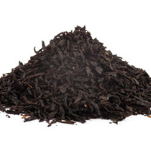
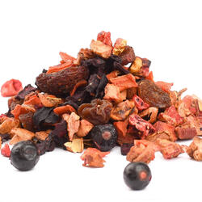
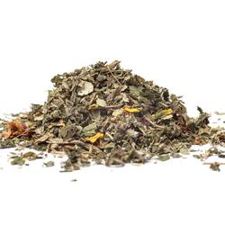
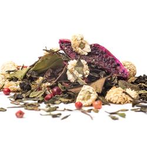

Zelené čaje
Tradiční čínské a japonské zelené čaje plné antioxidantů, které skvěle nastartují a osvěží vaši mysl.
Zobrazit produkty →Vyberte si ze široké nabídky našich výběrových čajů z celého světa.
Tradiční čínské a japonské zelené čaje plné antioxidantů, které skvěle nastartují a osvěží vaši mysl.
Zobrazit produkty →
Silné a plné čaje s vyšším obsahem kofeinu, které jsou ideální jako zdravá ranní alternativa kávy.
Zobrazit produkty →
Voňavé směsi plné sušeného ovoce a lesních plodů bez kofeinu, ideální pro celodenní pitný režim i pro děti.
Zobrazit produkty →
Přírodní směsi z meduňky, heřmánku či máty pro zklidnění, podporu trávení a lepší spánek.
Zobrazit produkty →
Čínské a tchajwanské oolongy, které v sobě spojují to nejlepší ze zelených a černých čajů.
Zobrazit produkty →
Tradiční mleté japonské čaje nejvyšší ceremoniální kvality, které dodávají energii až po dobu 6 hodin.
Zobrazit produkty →